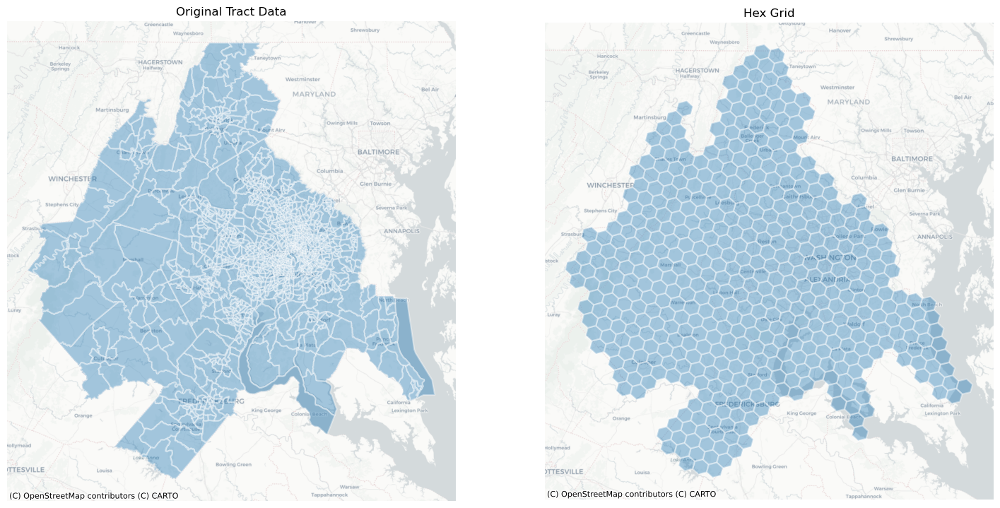
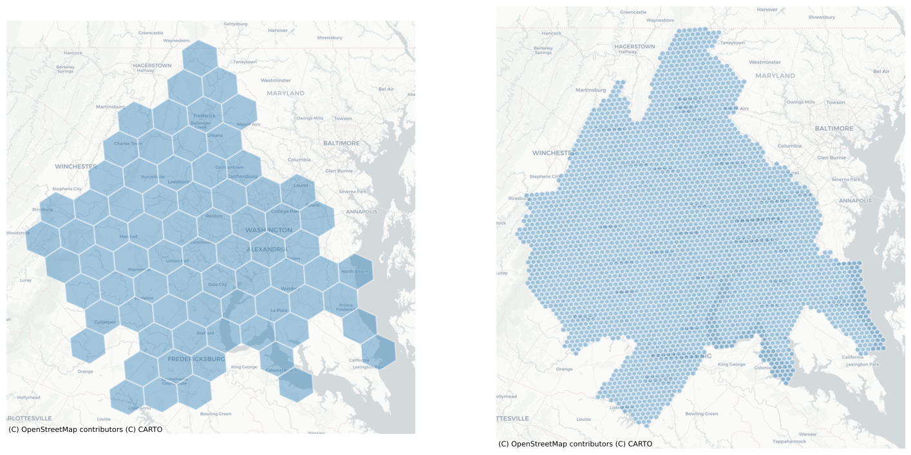
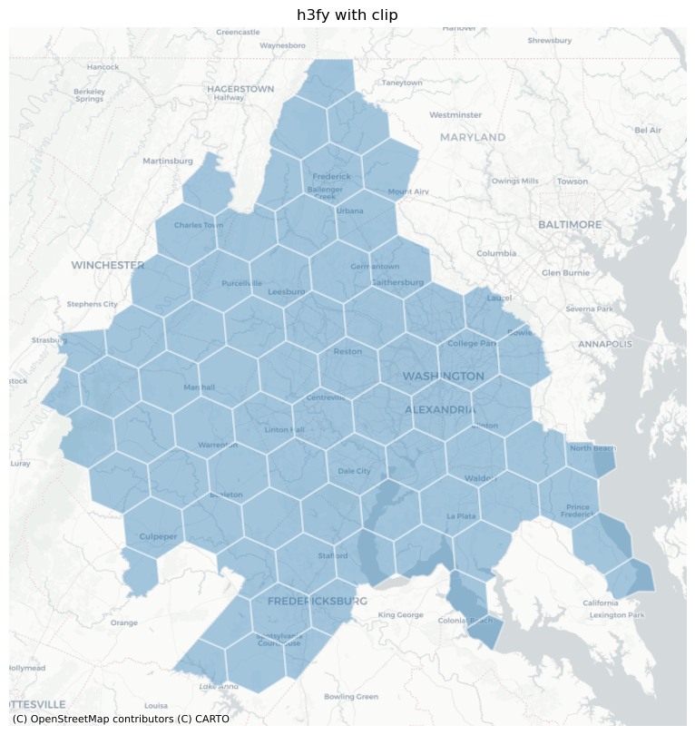
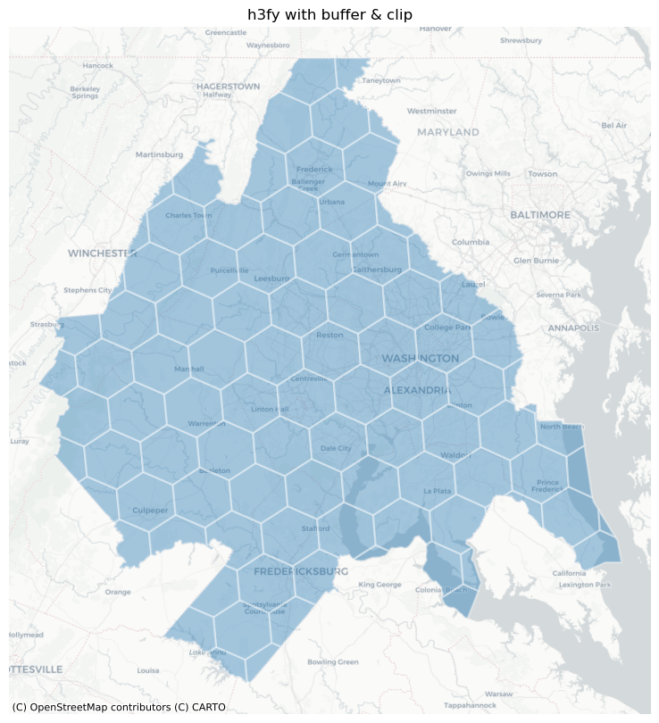
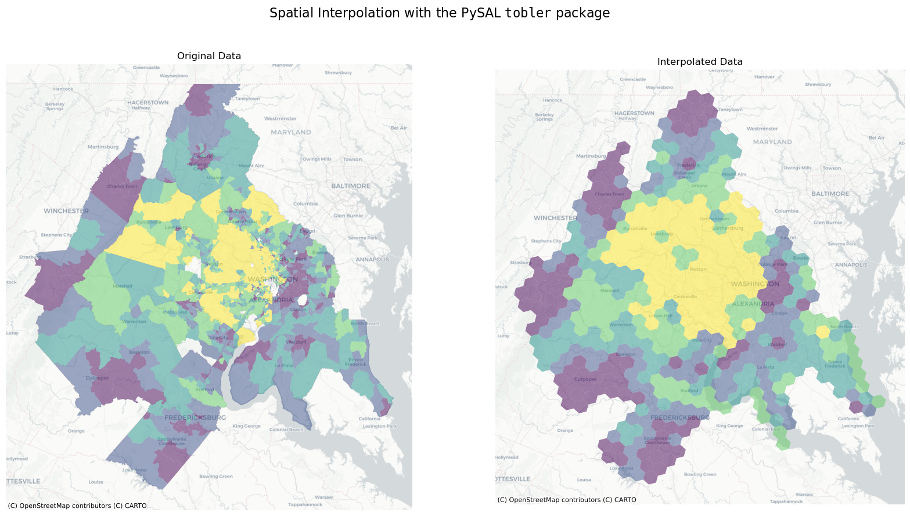
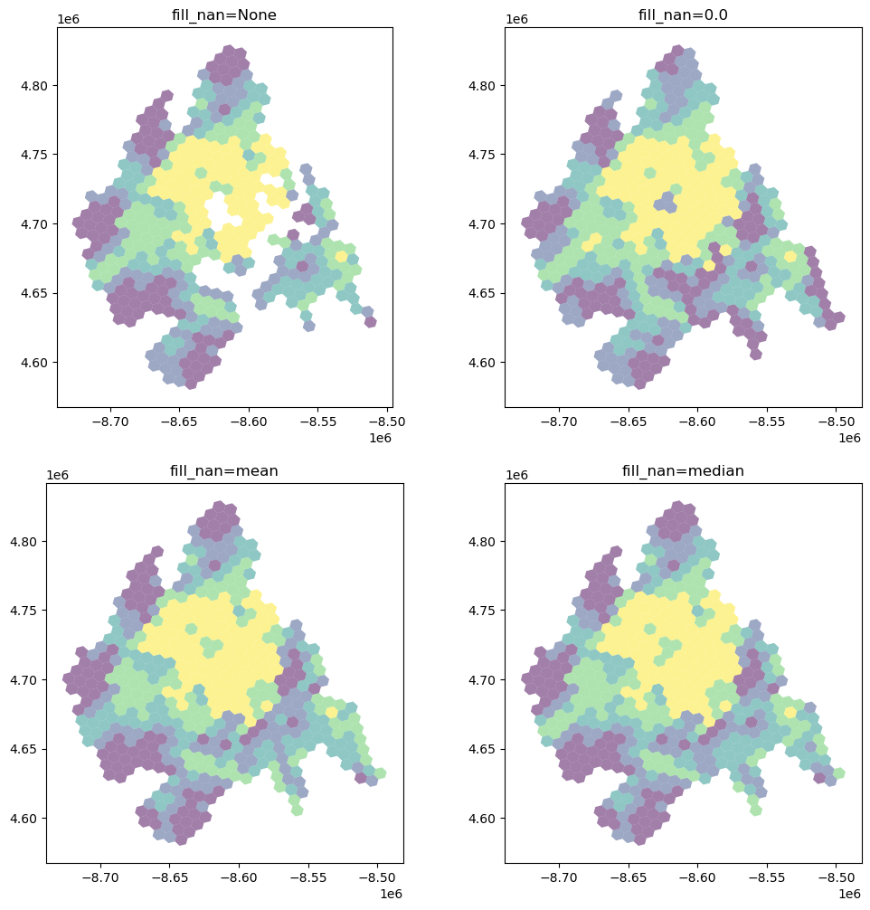
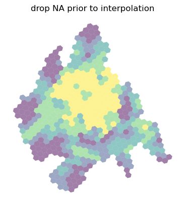

Generating h3 Hexgrids from GeoDataFrames¶
import matplotlib.pyplot as plt
from tobler.area_weighted import area_interpolate
from tobler.util import h3fy
%load_ext watermark
%watermark -v -a "author: eli knaap" -d -u -p tobler,cenpy,geopandas
Author: author: eli knaap
Last updated: 2026-04-02
Python implementation: CPython
Python version : 3.14.3
IPython version : 9.12.0
tobler : 0.13.1.dev135+g34b7a4c4d
cenpy : 1.0.1
geopandas: 1.1.3
Note: This notebook relies on functionality from the contextily package that provides convenient basemaps for geospatial plots, and the cenpy package that provide a convenient interface to the U.S. Census API. These can be installed with
pip install contextily cenpy
or
conda install contextily cenpy -c conda-forge
import contextily as ctx
from cenpy import products
/home/runner/micromamba/envs/test/lib/python3.14/site-packages/fuzzywuzzy/fuzz.py:11: UserWarning: Using slow pure-python SequenceMatcher. Install python-Levenshtein to remove this warning
warnings.warn('Using slow pure-python SequenceMatcher. Install python-Levenshtein to remove this warning')
Getting data from CenPy¶
To begin with, we will fetch some data from the 2017 ACS
acs = products.ACS(2017)
We’re looking for median home value, so first we will filter the ACS tables by those containing “value” in the description so we can find the correct variable code
acs.filter_tables("VALUE", by="description")
| description | columns | |
|---|---|---|
| table_name | ||
| B25075 | VALUE | [B25075_001E, B25075_002E, B25075_003E, B25075... |
| B25076 | LOWER VALUE QUARTILE (DOLLARS) | [B25076_001E] |
| B25077 | MEDIAN VALUE (DOLLARS) | [B25077_001E] |
| B25078 | UPPER VALUE QUARTILE (DOLLARS) | [B25078_001E] |
| B25079 | AGGREGATE VALUE (DOLLARS) BY AGE OF HOUSEHOLDER | [B25079_001E, B25079_002E, B25079_003E, B25079... |
| B25080 | AGGREGATE VALUE (DOLLARS) BY UNITS IN STRUCTURE | [B25080_001E, B25080_002E, B25080_003E, B25080... |
| B25082 | AGGREGATE VALUE (DOLLARS) BY MORTGAGE STATUS | [B25082_001E, B25082_002E, B25082_003E] |
| B25083 | MEDIAN VALUE (DOLLARS) FOR MOBILE HOMES | [B25083_001E] |
| B25096 | MORTGAGE STATUS BY VALUE | [B25096_001E, B25096_002E, B25096_003E, B25096... |
| B25097 | MORTGAGE STATUS BY MEDIAN VALUE (DOLLARS) | [B25097_001E, B25097_002E, B25097_003E] |
| B25100 | MORTGAGE STATUS BY RATIO OF VALUE TO HOUSEHOLD... | [B25100_001E, B25100_002E, B25100_003E, B25100... |
| B25107 | MEDIAN VALUE BY YEAR STRUCTURE BUILT | [B25107_001E, B25107_002E, B25107_003E, B25107... |
| B25108 | AGGREGATE VALUE (DOLLARS) BY YEAR STRUCTURE BUILT | [B25108_001E, B25108_002E, B25108_003E, B25108... |
| B25109 | MEDIAN VALUE BY YEAR HOUSEHOLDER MOVED INTO UNIT | [B25109_001E, B25109_002E, B25109_003E, B25109... |
| B25110 | AGGREGATE VALUE (DOLLARS) BY YEAR HOUSEHOLDER ... | [B25110_001E, B25110_002E, B25110_003E, B25110... |
| B25121 | HOUSEHOLD INCOME IN THE PAST 12 MONTHS (IN 201... | [B25121_001E, B25121_002E, B25121_003E, B25121... |
| B992519 | ALLOCATION OF VALUE | [B992519_001E, B992519_002E, B992519_003E] |
The variable we’re looking for is B25077_001E, the median home value of each. Lets collect that data for the Washington DC metropolitan region. The next cell can take a minute or two to run, depending on the speed of your connection.
dc = acs.from_msa("Washington-Arlington", variables=["B25077_001E"])
dc.info()
<class 'geopandas.geodataframe.GeoDataFrame'>
RangeIndex: 1359 entries, 0 to 1358
Data columns (total 7 columns):
# Column Non-Null Count Dtype
--- ------ -------------- -----
0 GEOID 1359 non-null str
1 geometry 1359 non-null geometry
2 B25077_001E 1331 non-null float64
3 NAME 1359 non-null str
4 state 1359 non-null str
5 county 1359 non-null str
6 tract 1359 non-null str
dtypes: float64(1), geometry(1), str(5)
memory usage: 170.8 KB
dc.crs
<Projected CRS: EPSG:3857>
Name: WGS 84 / Pseudo-Mercator
Axis Info [cartesian]:
- X[east]: Easting (metre)
- Y[north]: Northing (metre)
Area of Use:
- name: World between 85.06°S and 85.06°N.
- bounds: (-180.0, -85.06, 180.0, 85.06)
Coordinate Operation:
- name: Popular Visualisation Pseudo-Mercator
- method: Popular Visualisation Pseudo Mercator
Datum: World Geodetic System 1984 ensemble
- Ellipsoid: WGS 84
- Prime Meridian: Greenwich
Creating Hexgrids with the h3fy function¶
Using the h3fy function from the tobler.util module, we can easily generate a hexgrid covering the face of the DC Metropolitan region
dc_hex = h3fy(dc)
fig, axs = plt.subplots(1, 2, figsize=(18, 10))
axs = axs.flatten()
dc.plot(ax=axs[0], alpha=0.4, linewidth=1.6, edgecolor="white")
dc_hex.plot(ax=axs[1], alpha=0.4, linewidth=1.6, edgecolor="white")
axs[0].set_title("Original Tract Data")
axs[1].set_title("Hex Grid")
for i, _ in enumerate(axs):
ctx.add_basemap(axs[i], source=ctx.providers.CartoDB.Positron)
axs[i].axis("off")

By altering the resolution parameter, we can generate grids using hexes of various sizes
dc_hex_large = h3fy(dc, resolution=5)
dc_hex_small = h3fy(dc, resolution=7)
fig, axs = plt.subplots(1, 2, figsize=(18, 10))
dc_hex_large.plot(ax=axs[0], alpha=0.4, linewidth=1.6, edgecolor="white")
dc_hex_small.plot(ax=axs[1], alpha=0.4, linewidth=1.6, edgecolor="white")
for ax in axs:
ctx.add_basemap(ax=ax, source=ctx.providers.CartoDB.Positron)
ax.axis("off")

and by using the clip parameter, we can ensure that the hexgrid is does not extend beyond the borders of the input geodataframe
dc_hex_clipped = h3fy(dc, resolution=5, clip=True)
fig, ax = plt.subplots(figsize=(10, 10))
dc_hex_clipped.plot(ax=ax, alpha=0.4, linewidth=1.6, edgecolor="white")
ctx.add_basemap(ax=ax, source=ctx.providers.CartoDB.Positron)
ax.axis("off")
ax.set_title("h3fy with clip")
Text(0.5, 1.0, 'h3fy with clip')

Notice, though, that we still have some sharp hexagonal edges, meaning the hexagon doesn’t fully cover the original source polygons. To force full coverage, we can use the buffer keyword (or, optionally, both buffer and clip).
dc_hex_clipped = h3fy(dc, resolution=5, clip=True, buffer=True)
fig, ax = plt.subplots(figsize=(10, 10))
dc_hex_clipped.plot(ax=ax, alpha=0.4, linewidth=1.6, edgecolor="white")
ctx.add_basemap(ax=ax, source=ctx.providers.CartoDB.Positron)
ax.axis("off")
ax.set_title("h3fy with buffer & clip")
Text(0.5, 1.0, 'h3fy with buffer & clip')

Interpolating to a hexgrid¶
Thus, in just a few lines of code, we can estimate the value of census variables represented by a regular hexgrid
here, we will estimate the median home value of each hex in the DC region using simple areal interpolation
dc_hex_interpolated = area_interpolate(
source_df=dc, target_df=dc_hex, intensive_variables=["B25077_001E"], fill_nan="mean"
)
/home/runner/micromamba/envs/test/lib/python3.14/site-packages/tobler/area_weighted/area_interpolate.py:350: UserWarning: nan values in variable: B25077_001E, replacing with 437297.2201352367
vals = _nan_check(source_df, variable, fill_value=fill_nan)
fig, axs = plt.subplots(1, 2, figsize=(20, 10))
dc.plot("B25077_001E", scheme="quantiles", alpha=0.5, ax=axs[0])
dc_hex_interpolated.plot("B25077_001E", scheme="quantiles", alpha=0.5, ax=axs[1])
axs[0].set_title("Original Data")
axs[1].set_title("Interpolated Data")
for ax in axs:
ctx.add_basemap(ax=ax, source=ctx.providers.CartoDB.Positron)
ax.axis("off")
plt.suptitle(
r"Spatial Interpolation with the PySAL $\mathtt{tobler}$ package", fontsize=16
)
Text(0.5, 0.98, 'Spatial Interpolation with the PySAL $\\mathtt{tobler}$ package')

Dealing with NaN Values¶
It’s important to understand how and NaN (not-a-number) values (i.e. missing data) in the source dataframe are handled.
fill_nans = [None, 0.0, "mean", "median"]
f, ax = plt.subplots(2, 2, figsize=(12, 12))
ax = ax.flatten()
for i, nan in enumerate(fill_nans):
dc_hex_interpolated = area_interpolate(
source_df=dc,
target_df=dc_hex,
intensive_variables=["B25077_001E"],
fill_nan=nan,
).plot("B25077_001E", scheme="quantiles", alpha=0.5, ax=ax[i])
ax[i].set_title(f"fill_nan={nan}")
/home/runner/micromamba/envs/test/lib/python3.14/site-packages/tobler/area_weighted/area_interpolate.py:350: UserWarning: nan values in variable: B25077_001E, replacing with None
vals = _nan_check(source_df, variable, fill_value=fill_nan)
/home/runner/micromamba/envs/test/lib/python3.14/site-packages/tobler/area_weighted/area_interpolate.py:350: UserWarning: nan values in variable: B25077_001E, replacing with 0.0
vals = _nan_check(source_df, variable, fill_value=fill_nan)
/home/runner/micromamba/envs/test/lib/python3.14/site-packages/tobler/area_weighted/area_interpolate.py:350: UserWarning: nan values in variable: B25077_001E, replacing with 437297.2201352367
vals = _nan_check(source_df, variable, fill_value=fill_nan)
/home/runner/micromamba/envs/test/lib/python3.14/site-packages/tobler/area_weighted/area_interpolate.py:350: UserWarning: nan values in variable: B25077_001E, replacing with 385900.0
vals = _nan_check(source_df, variable, fill_value=fill_nan)

Further, all of these options are still different from dropping any geometries with missing values for the variable being interpolated. In this case, the dropped observations in source are not part of the overlay system so only the overlapping pieces of source and target count toward the total weight applied.
ax = dc_hex_interpolated = area_interpolate(
source_df=dc.dropna(subset=["B25077_001E"]),
target_df=dc_hex,
intensive_variables=["B25077_001E"],
fill_nan=nan,
).plot("B25077_001E", scheme="quantiles", alpha=0.5)
ax.set_title("drop NA prior to interpolation")
ax.axis("off")
(np.float64(-8739249.02217054),
np.float64(-8481429.572694423),
np.float64(4567405.812595519),
np.float64(4841621.00817157))

For extensive variables (where target values are a weighted sum), dropping missing observations is functionally equivalent to setting fill_nan=0 and allocate_total=True.
For intensive variables, however, the weighted average provided by each target zone is not “diluted” by missing data. The total weights at the target polygon is the shared area of source and target, not the total area of target.